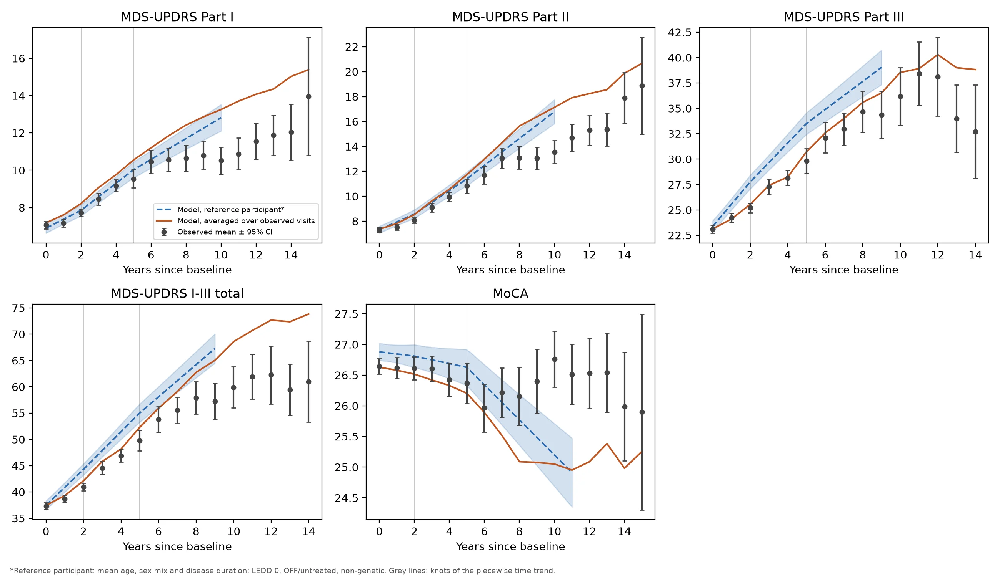
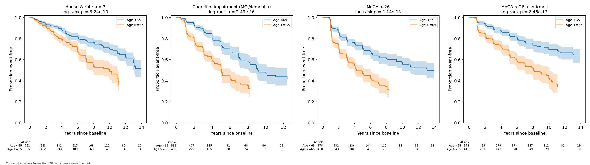
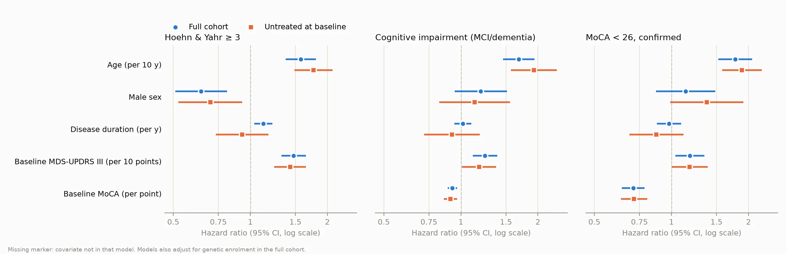

Biostatistics · Longitudinal and survival analysis
Parkinson’s disease progression in PPMI: trajectories and clinical milestones
How fast do motor, daily-living and cognitive scores change in early Parkinson’s disease, and who reaches disability and cognitive milestones first? I modelled 1,789 participants from the Parkinson’s Progression Markers Initiative with mixed-effects and Cox models, and checked the main modelling assumptions instead of taking them on trust.

Describing progression honestly
Progression in Parkinson’s disease is usually summarised as a points-per-year slope. That is convenient, but it hides three problems: treatment changes the scores, people who get worse tend to leave the study, and change is rarely linear. I set out to estimate progression of the MDS-UPDRS (Parts I–III) and the MoCA, and time to two milestones (Hoehn & Yahr stage 3 and cognitive impairment), in a way that deals with each of these.
1,789 people, and a third already on treatment
The analysis uses the PPMI Parkinson’s disease cohort: mean age 63.5 at baseline, 61% male, median 0.8 years from diagnosis, median follow-up 3.1 years (IQR 1.4–6.1). Time is measured in months from the baseline visit.
- Not a pure de novo cohort. A check of the medication log showed 32% were already treated at baseline, including 90% of the genetic-enrolment participants. Every model was re-run on the 1,171 untreated at baseline.
- Medication state. For Part III the OFF (or untreated) exam is used when both exist, and the exam’s state and levodopa-equivalent daily dose (LEDD) are model covariates.
- Cleaning the LEDD log. Dates are month-only, so a dose change counted both the old and the new dose in that month. Duplicate rows and these switch months were resolved before summing.
- Baseline MoCA. PPMI often records it at screening; that score is used when it is at most 6 months before baseline.
Motor scores rise fastest early; cognition holds, then falls
Each outcome has a linear mixed-effects model with a random intercept and slope per participant, adjusted for age, sex and disease duration (each interacting with time), LEDD, medication state and genetic enrolment. A straight-line time trend was rejected for every outcome (likelihood-ratio P from 0.01 to 10−16), so time is piecewise-linear with knots at 2 and 5 years.
| Change per year (95% CI) | 0–2 years | 2–5 years | After 5 years |
|---|---|---|---|
| MDS-UPDRS I (non-motor) | 0.39 (0.27–0.52) | 0.64 (0.52–0.76) | 0.47 (0.37–0.58) |
| MDS-UPDRS II (daily living) | 0.50 (0.34–0.66) | 0.82 (0.66–0.97) | 0.95 (0.81–1.10) |
| MDS-UPDRS III (motor) | 2.00 (1.67–2.33) | 1.73 (1.41–2.05) | 1.19 (0.89–1.50) |
| MDS-UPDRS I–III total | 3.02 (2.52–3.53) | 3.20 (2.70–3.70) | 2.67 (2.20–3.15) |
| MoCA | 0.03 (−0.06 to 0.12) | 0.00 (−0.09 to 0.09) | −0.23 (−0.30 to −0.15) |
The raw Part III means rise slowly in the first two years. That is treatment, not slow disease: once medication state and dose are in the model, motor progression is fastest early and slows later. Daily-living impact (Part II) does the opposite and accelerates. The single-slope summary for MoCA (−0.07 a year) averages a flat first five years with a later decline.
The figure also shows dropout at work. After about six years the model’s mean, which estimates the whole cohort under a missing-at-random assumption, sits above the observed MDS-UPDRS means and below the observed MoCA. The people still attending late visits are the less affected ones.
Age dominates; baseline severity adds to it
Milestones are taken at the first visit where they are observed, among participants free of them at baseline. MoCA < 26 is required to be confirmed at the next visit, because single-visit dips near the cut-off produced a spurious drop in event-free survival at the first follow-up; confirmation removed about 30% of events.

| Hazard ratio (95% CI) | H&Y ≥ 3 | Cognitive impairment | MoCA < 26, confirmed |
|---|---|---|---|
| Events / participants | 299 / 1,417 | 311 / 966 | 260 / 988 |
| Age, per 10 years | 1.58 (1.37–1.80) | 1.68 (1.46–1.94) | 1.78 (1.52–2.07) |
| Male sex | 0.64 (0.51–0.81) | 1.20 (0.95–1.51) | 1.14 (0.87–1.49) |
| Baseline MDS-UPDRS III, per 10 points | 1.48 (1.32–1.65) | 1.24 (1.11–1.39) | 1.18 (1.04–1.35) |
| Baseline MoCA, per point | – | 0.93 (0.89–0.97) | 0.71 (0.64–0.79) |
Models are also adjusted for disease duration and genetic enrolment. By Kaplan–Meier, about 21% reached Hoehn & Yahr 3 within five years and 37% were classified as cognitively impaired (MCI or dementia).
Assumptions tested, not assumed
- Proportional hazards. Schoenfeld tests flagged a few covariates, which were refitted with separate hazard ratios before and after 3 years. The lower risk of Hoehn & Yahr 3 in men is mainly early (HR 0.50 in years 0–3, 0.79 after), and baseline MoCA matters most early (0.63 vs 0.81 per point, P = 0.02 for the difference). No effect changed direction.
- Untreated at baseline. In the 1,171 participants untreated at baseline, the trajectories and the age, sex, motor and cognitive hazard ratios were similar. The early motor slope was steeper (about 2.2 points a year). The apparent effect of disease duration on Hoehn & Yahr 3 (HR 1.12 per year) disappeared, so it reflected the treated, longer-diagnosed participants and not disease biology.

- Dropout. A pattern-mixture analysis estimated slopes separately by length of follow-up. Participants with under two years of follow-up showed faster Part III change, consistent with informative dropout.
- Event timing. Milestones are only seen at visits. Placing each event midway between the last negative and first positive visit left the hazard ratios essentially unchanged.
What this does and doesn’t show
What it supports
- Medication-adjusted motor progression is fastest in the first years, while daily-living impact accelerates.
- Cognition is stable on average for about five years before declining.
- Age is the strongest predictor of both disability and cognitive milestones.
What it doesn’t show
- Progression for people who left the study: the mixed models assume data are missing at random, and the dropout checks suggest this is optimistic.
- Effects of treatment: LEDD is a time-varying covariate, not a randomised exposure.
- Competing risks: death is not modelled, and MoCA is not adjusted for education.
Data used in the preparation of this article was obtained on 2026-10-06 from the Parkinson’s Progression Markers Initiative (PPMI) database (www.ppmi-info.org/access-data-specimens/download-data), RRID:SCR_006431. For up-to-date information on the study, visit www.ppmi-info.org.
PPMI – a public-private partnership – is funded by the Michael J. Fox Foundation for Parkinson’s Research, and funding partners; including Abbvie, Alamar Biosciences, Aligning Science Across Parkinson’s, Arrowhead Pharma, Arvinas, AskBio, BIAL, BioArctic, Biohaven, BlueRock Therapeutics, Bristol-Myers Squibb, Calico Labs, Capsida Biotherapeutics, Critical Path Institute, DaCapo Brainscience, Denali, Edmond J. Safra Foundation, Eli Lilly, Gain Therapeutics, GE HealthCare, Genentech, GSK, Insitro, Johnson & Johnson Innovative Medicine, Lundbeck, Merck, Neumora, Neuron23, Novartis, Olink, Regeneron, Roche, Sanofi, Tenvie, UCB, VanquaBio, Voyager Therapeutics, the Weston Family Foundation.
This analysis used PPMI Tier 1 data, available to registered users who accept the PPMI Data Use Agreement. Only aggregate results are shown; no participant-level data are shared.